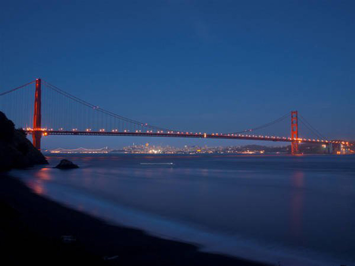

Cầu Cổng Vàng (Golden Gate Bridge) là một trong những công trình kiến trúc nổi tiếng nhất của San Francisco, Mỹ. Với chiều dài khoảng 2,7km, cách mặt nước 67m, cầu nối liền giữa San Francisco và Marin County trên Vịnh San Francisco và được xem là kỳ quan kiến trúc của thế kỷ 20.
Cầu Cổng Vàng không chỉ là một công trình kiến trúc đặc sắc, mà còn là một biểu tượng văn hóa và lịch sử của thành phố San Francisco. Cây cầu đặc biệt này được xây dựng vào thời điểm kinh tế khó khăn ở Mỹ, mang lại nhiều cơ hội việc làm cho người dân địa phương trong quá trình xây dựng.
Cầu Cổng Vàng không chỉ là một công trình kiến trúc đặc sắc, mà còn là một biểu tượng văn hóa và lịch sử của thành phố San Francisco. Cây cầu đặc biệt này được xây dựng vào thời điểm kinh tế khó khăn ở Mỹ, mang lại nhiều cơ hội việc làm cho người dân địa phương trong quá trình xây dựng.